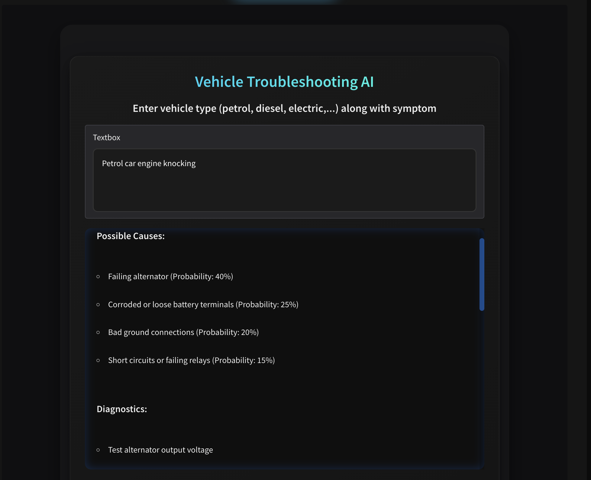
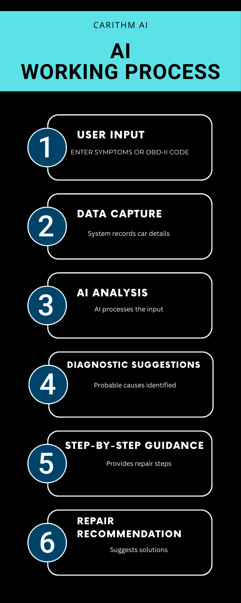

About Carithm AI
Your Free AI Car Diagnostic Tool
This page explains how Carithm AI works, its features, and how it helps drivers and mechanics troubleshoot cars — for informational purposes.
🔹 What Carithm AI Is
Carithm AI is a virtual AI car mechanic designed to help you troubleshoot engine, fuel system, and electrical issues. Using natural language input or OBD-II codes like P0300, P0171, and P0420, it provides accurate diagnostics, probable causes, and step-by-step repair guidance. This engine troubleshooting AI is ideal for car enthusiasts and everyday drivers alike. Learn more on our main AI page.
🔹 How Carithm AI Works
Enter your car’s symptom or an OBD-II code, and Carithm AI:
- Analyzes input using advanced AI algorithms
- Provides likely causes and component-specific probabilities
- Gives step-by-step diagnostic checks
- Suggests repair options and approximate costs
Combine AI diagnostics with our VIN Decoder for precise vehicle-specific guidance.
🔹 Why Carithm AI Is Trustworthy & Free
Carithm AI is completely free, with no signup required. It leverages the latest AI models, a vast OBD-II code database, and verified repair knowledge to provide accurate guidance. Your data is never sold, and the tool works reliably across petrol, diesel, and hybrid vehicles. Discover more tips on our Car Blog.
🔹 Unique Features
- Full OBD-II code decoding for all standard P0xxx and P1xxx codes
- Compatible with petrol, diesel, and hybrid vehicles
- Step-by-step AI-guided diagnostics and repair suggestions
- Works instantly on mobile, tablet, and desktop with no login
- Links to VIN Decoder and Car Blog for extra guidance
- Supports natural language input for engine troubleshooting
FAQ
Is Carithm AI free?
Yes, Carithm AI is completely free with no signup required, providing instant AI-based guidance for engine, fuel system, and electrical problems.
Can I use OBD-II codes with Carithm AI?
Absolutely! Carithm supports all standard OBD-II codes such as P0300, P0171, P0420, and more, providing detailed explanations, probable causes, and step-by-step repair instructions.
Which vehicle types are supported?
Carithm AI works reliably with petrol, diesel, and hybrid vehicles, ensuring accurate diagnostics across all common car types.
Is my data safe with Carithm AI?
Your data is never sold or stored. All diagnostic requests are processed securely and anonymously.
Does Carithm AI work on mobile and desktop?
Yes, it works instantly on mobile, tablet, and desktop without requiring any downloads or installations.
How fast does Carithm AI provide diagnostics?
Carithm AI analyzes symptoms and OBD-II codes in seconds, giving immediate guidance for engine troubleshooting and repair steps.